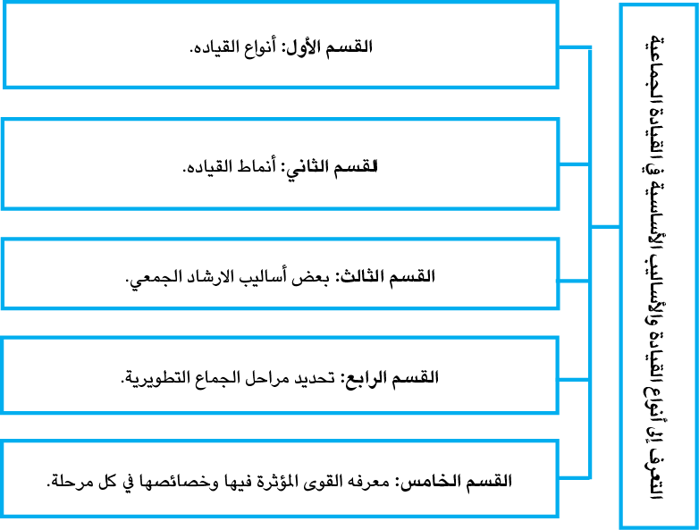
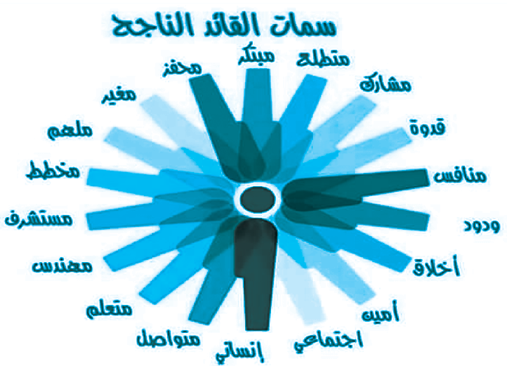
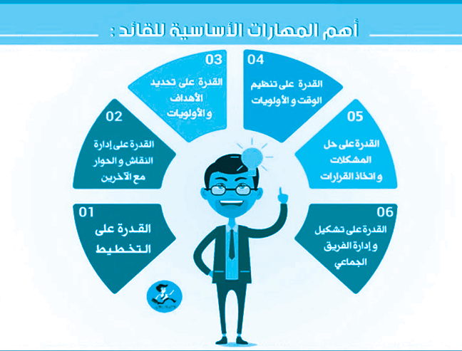

|
القيادة في الإرشاد الجمعي هي تلك العملية التي يقوم بها المرشد النفسي بتوجيه أعضاء المجموعة ومساعدتهم على التفاعل الايجابي وتحقيق أهداف الجلسات ضمن مناخ يسوده الأمان والثقة والاحترام وهو نوع من التَّدريب الخاصِّ على أساليب التعامل مع الجماعات، والإلمام بديناميات الجماعة، والأدوار الاجتماعية، التي يمارسها أعضاء الجماعة، والعوامل المؤثرة على قوة الجماعة وضعفها. إن وجود شخص متخصِّص يقودُ الأفراد الذين يُواجهون مثلَ هذه المشكلات، يساعدهم في التَّعامُل مع مشكلاتهم، وتجاوزها بما يمتلكه من معرفة وخبرة ومهارة وخصائص شخصيّة تؤهله للقيام بهذا الدور القياديّ. يقود الجماعة الإرشاديّة - عادة – المرشد، وهو الشخص المؤهَّل تأهيلًا علميًّا؛ للقيام بهذا الدور، وهو الخبير الذي يملك المهارة والقدرة على إيجاد حلول للمشكلة، فمصطلحات: قيادة، ريادة، زعامة يستخدمونها – عادة - بوصفها دالّةً على دور المرشد والمعالج النفسيّ الذي يتولَّى مهامَّ تنظيم وإدارة الجماعات الإرشادية والعلاجيّة وتوجيهها، فهو المرشد النَّفسيّ، أو الأخصائي النّفسيّ ، أو الأخصائي الاجتماعيّ ، أو المعالج النَّفسيّ، والمديرون، والمعلم ، وعلماء الدين ... وهؤلاء جميعا وغيرهم يمكنهم استخدام المجموعات الإرشاديّة؛ لتعزيز عملهم مع الآخرين. |
2.1 الهدف العام للوحدة الدراسيَّة
|
عزيزي الطالبَ يُتَوقَّعُ منك بعد دراستك للوحدة الدراسية الحاليّة أن تتعرّف إلى: 1- أنواع القيادة والأساليب الأساسية في القيادة الجماعية: أنواع القيادة. أنماط القيادة. مراحل حياة الجماعة التطويرية. القوى المؤثرة في المجموعة الإرشادية. مراحل تطور الجماعة. دور المرشد. دور المسترشد. |
|
بعض أساليب الإرشاد الجمعيّ من خلال: الاستماع النشط. الانعكاس. التوضيح والاستفهام. التلخيص. الربط. تقديم المعلومات والمحاضرات الصغيرة. التشجيع والدعم. إشاعة جو إيجابي. النمذجة والكشف الذاتي. استخدام العينين. استخدام الصوت. استخدام طاقة القائد. تحديد الحلفاء. |
|
عزيزي الطالب وِفْقًا للهدف العام للوحدة، وبعد دراستك لها، يُتَوَقَّعُ منك تحقيق النواتج الآتية: تحديد أنواع القيادة، وتحديد الأساليب الأساسيَّة للقيادة. توضيح أنواع القيادة وأنماطها. تحديد مراحل الجماعة التَّطويريّة، والقوى المؤثّرة فيها، وخصائصها في كل مرحلة. |
4.1 الموارد والقراءات المساندة
|
عزيزيَ الطالبَ: أثناءَ دراستك لهذه الوحدة، قد تَجِدُ أنَّكَ بحاجةٌ إلى مزيدٍ من التَّوضيحات والمعلومات حول ما جاء فيها من أفكار ومفاهيم، فيمكنُك الرجوع إلى الموارد والمراجع التالية: |
|
1- مصادر إلكترونية: صفحة المقرر الكترونية: الخطة والعروض التقديمية والوسائط المتعددة. الصفوف الافتراضية. مصادر أخرى: المتطلبات السابقة والتدريبات العملية بالتخصص. مصادر ورقية: كتاب مهارات القيادة في الارشاد الجمعيّ، باسم محمد علي الدحادحة، للمجموعات الصغيرة. الأسس النظرية والتطبيقات العملية |
تتناول الوحدة الثالثة موضوعات ومفاهيم أساسية في أنواع القيادة والأساليب الأساسية في القيادة الجماعيَّة، وذلك من خلال دراسة الموضوعات المرتبطة بأهداف الوحدة، كما يوضّحه الشكلُ


|
|
من هو القائد الناجح برأيك؟ وما الاعتبارات التي تُحَدِّدُ أُسلوبَ القيادة في المجموعات الارشادية؟ |

|
|
موقع يوتيوب/ مهارات القيادة في الإرشاد النفسيّ |

|
|
لقد حظي موضوع القيادة باهتمام العلماء على اختلاف مشاربهم؛ فاهتم بها علماء النّفس الاجتماعيّون، بوصفها محورًا أساسيًّا من محاور ديناميات الجماعة، واهتم بها ( السوسيولوجيّون ) علماء الاجتماع بوصفها ظاهرةً اجتماعيَّةً تنبثِقُ من وجود الفرد داخلَ الجماعة، وعاملًا من عوامل تماسُك الجماعة، وتضامنها وتنظيمها. ودرسها علماءُ الاتّصال بوصفها أُسلوبًا من أساليب الاتِّصال النّاجح في الجماعة، وركّز السيكولوجيون جهودَهم في هذا الصدد؛ لمعرفة أهم السِّمات التي تميّز القادة عن غيرهم. كما أنَّ موضوع القيادة كان مَحِلَّ اهتمام الفلاسفة منذ كونفوشيوس حتى برترند راسل، وأوضحوا قوة بعض الأفراد على الآخرين. إلّا أنَّ ظاهرة القيادة لم تحظَ باهتمام الباحثين والعلماء اهتمامًا علميًّا ومنهجيّا إلا في بداية القرن التاسع عشر. وقد شهدت السنوات العشرون الماضية زيادةً واضحةً في محاولات استقصاء، ودراسة طبيعة ظاهرة القيادة، سواءً عن طريق المنهج التَّجريبيّ أو الأُسلوب السوسيومتري- (أسلوبٌ بحثيٌّ يُستخدَمُ في دراسة العلاقات الاجتماعيّة داخل مجتمع معين) - أو الملاحظات العلميَّة المنظّمة الشخصيّة. ولقد بذل المختصون في علم النفس الاجتماعي وعلم الاجتماع وبعض العلوم الاجتماعية الأُخرى جهودًا مكثَّفةً - بعد الحرب العالمية الثانية- لكي يصلوا إلى فهمٍ علميٍّ لظاهرة القيادة، والسلوك الاجتماعيّ للقائد، وأهّم السِّمات التي تميِّزُ القائد الناجح. |

|
القيادة عملية تأثير متبادل يؤدي عن طريق تضافر الأفراد رغم الفروق بينهم إلى توجيه النشاط الإنساني سعيا وراء تحقيق هدف مشترك. القيادة ظاهرة تفاعلية تنبثق وتظهر حينما تتشكل أو تتكون الجماعة |
|
عزيزي الطالبَ: بعد مشاهدتك لهذا المقطع، استنتجْ أهمَّ مهارات القيادة. |

|2| أنواع القيادات في الإرشاد والعلاج الجمعيّ
وهناك تعريفات عديدة للقيادة، ولعلَّ من أهمِّها ما هو آتٍ:
إنَّ القيادة عملية تفاعليّةٌ تنبثق وتظهر حينما تتشكَّلُ أو تتكوَّن الجماعة، وتعني عمليَّة التأثير في الناس في موقف معيّن.
هي العمليَّة التي من خلالها يؤثِّر القائد في سلوك أعضاء الجماعة للوصول إلى هدفٍ معيّن.
هي القدرة على التَّأثير في الآخرين بواسطة الاتّصال تحقيقًا لهدفٍ ما.
القيادة هي القدرة على التأثير في سلوك أفراد الجماعة، وتنسيق جهودهم، وتوجيههم؛ لبلوغ الغايات المنشودة، ومن مفهوم القيادة الآنف الذّكر، يمكننا أن نتبيَّنَ ثلاثة عناصر أساسيّة تتكوّن منها القيادة، وهي:
ـوجود مجموعة من الأفراد يعملون في تنظيم معيّن.
ـقائد من أفراد الجماعة يؤثِّر في سلوكهم وتوجيههم.
ـهدف مشترك تسعى الجماعة إلى تحقيقه.
ولو استعرضنا التعريفات السابقة للقيادة لاستنتجنا الحقائق الآتية:
إنَّ أساس القيادة هو مساعدة الجماعة؛ لكي يتعاونَ أفرادُها في تحقيق هدف مشتركٍ، يتَّفقون عليه، ويقتنعون بأهميته، فيتفاعلون بطريقة تضمن تماسُك الجماعة، وتضامنها، وتحرُّكها في الاتجاه المرغوب فيه، الذي يؤدِّي إلى تحقيق الهدف المشترك.
والقائد هو ذلك الشخص الذي يوجه الجماعة، ويتعاونُ معه لتحقيق هدفٍ ما.
إنَّ القيادة ظاهرةٌ اجتماعيّةٌ تنبثِقُ حينما تتوفَّرُ في فردٍ معيّنٍ سماتُ الشّخصيّة المُسيطرة، إزاءَ آخرين تتوفَّر فيهم سماتُ الشّخصيّة التَّابعة.
إنَّ عمليّة التَّأثير تُعَدُّ جوهرَ ديناميات عمليّة القيادة؛ إذ لا بُدَّ للقيادة من وجود تأثير من نوع معيَّن على مجموعة منَ الأفراد.
نجاحُ أيِّ مجموعةٍ يعتمدُ على عددٍ منَ المتغيِّرات، وأكثر هذه المتغيّرات أهمِّيَّة هو القائد، لذا، فانة من المتطلَّبات الأوَّلية في العمل فحصَ مدى كفاءة القائد، وقدرتِهِ على إدارة المجموعة الإرشادية، وهناك مجموعةٌ منَ الصِّفات والسِّمات الشَّخصيَّة التي يكون على القائد بحاجةٌ ماسّةٌ لها؛ حتى يكونَ مؤثِّرًا، إضافةً إلى المهارات المِهْنِيَّةِ لتحقيق أهداف المجموعة.
للقيادة أنماط متعددة منها :
أولا : القيادة السُّلطوية ( التَّسلُّطيّة ):
في هذا النوع من القيادة يشعرُ القائدُ بأنَّ الأعضاء ليس باستطاعتهم الوصولَ إلى الاستبصار وحدَهم؛ لأنَّـه لـو كـــان باستطاعتهم فعلُ ذلك لَمَا أتَوْا إلى المرشد القائد، كما أنَّهم لا يستطيعون أنْ يفسِّروا سلوكيَّاتِهم، ومِنْ ثَمَّ، فالمرشد هو الذي يفسِّرُ لهم سلوكيَّاتهم، بوصفِهِ خبيرًا في الإرشاد والممارسة والتأهيل، أي، مختصًا بكلِّ ما يتعلَّق بالمجموعة نتيجةً لذلك، يضعُ القائد في الجَلْسة الأُولى أهدافَ المجموعةِ وحدَهُ دونَ التَّشاور والتَّباحث مع أعضاء المجموعة، ويتحمَّلُ القائدُ مسؤوليَّةَ المجموعةِ أكثرَ من الأعضاء، إلا أنَّ هناكَ مسؤوليَّةً للأعضاء تَظْهَرُ عندَ تنفيذ متطلَّباتِ القائدِ وأوامره، وعليه، فإنَّ التَّفاعُل ما بين القائد والأعضاء يكونُ رسميًّا.
كما يظهر في هذا النوع منَ القيادة اعتماديَّة الأعضاءِ على القائد، وهذا ينمي عند الأعضاء الاتكالية المِهْنِيَّة على الآخرين، وعدم تحمُّل مسؤولية سلوكيَّاتهم ومشاعرهم وتفكيرهم، كما أنَّ كميَّة الانفتاح والصراحة قليلةٌ جدا، والتواصل ما بين الأعضاء والقائد والأعضاء فيما بينهم ضعيفٌ، وغيرُ فعّالٍ، وتنتهي العلاقات بانتهاء المجموعة.
والقائد التّسلُّطيّ - بشكلٍ عامٍ- يُحدِّدُ للأعضاء النماذجَ الواجبَ عليهم عملُها، والأشخاصَ
الذين يمكنهم العملَ معهم، بالإضافة إلى ذلك يتعامَلُ مع الأعضاءِ بطريقةٍ متعاليَةٍ وغيرِ شخصيَّةِ.
يتبنَّى هذا النَّوع منَ القيادة المدارس الإنسانيّة، وهنا القائد لا يعطي تعليمات وأوامر، كما في النَّمط السُّلطويّ، ومع ذلك، تظهرُ منه سلطةً حسَب الموقف، أو السّياق، ولو أنَّها قليلة جداً، ويتعامل القائد الديمقراطيُّ مع الأعضاءِ بطريقة ديمقراطيّة، بمعنى: يحدُثُ التَّعلُّمُ بطريقة تبادليّة ( أخذٌ، وعطاءٌ ) فهو حاضرٌ وموجودٌ متى أرادتِ المجموعة ذلك، ومع ذلك، نجِدُ أنَّ هناكَ حدودًا للعلاقة ما بين الأعضاءِ والقائد.
كما أنَّ نوعيَّةَ المشكلات التي يبحثُ فيها الأعضاءُ عميقةٌ وشخصيَّةٌ ومُهِمَّة، وهذا يعودُ إلى ثقتهم الكبيرة في القائد، ولمساعدته لهم وقتَ الحاجة، ومِنْ ثَمَّ، فإنَّ فرصة التَّعلُّم كبيرةٌ؛ إذ الثقة والمَودة هما الجوُّ السَّائدُ في العلاقة ما بين الأعضاء والقائد، والأعضاء مع بعضهم بعضا.
ومن أهمِّ أهداف القيادة الدّيمقراطيّة البحثُ عنِ الدَّوافع المَخفية عندَ العضوِ المُسترشد، وهنا، يساعِدُ القائدُ الأعضاءَ في وضعِ الأهدافِ، فيَخْلُق فيهم المسؤوليّة والالتزام.
والقائد الدِّيمقراطيّ ليس كالقائد السُّلطويّ؛ فهو يتقبَّلُ ويتفهَّمُ ويحمِلُ المسؤوليَّة، كما أنَّ الحُلولَ التي يَصِلُ إليها تتعلَّقُ باهتمامات الأعضاءِ في المجموعة، والقائد يعملُ من وجهة نظر المسؤولية والاستقلاليّة؛ ليكونَ هناك قدرةٌ للمشاركين على تدريب أنفسِهم وتطويرها، وذلك لفهم ذاتهم، والقائد الدّيمقراطيّ يستخدِمُ التَّوضيح، والتَّغذية الرَّاجعة والتَّقييم في العملية، وكلّها أدواتٌ يستخدمها الرَّئيس القائد.
تدريب ( 1 )

|
قارن بين القيادة السُّلطويّة والقيادة الدّيمقراطيّة |
وهنا يعتبر القائد غيرُ مسؤول عنَ الأهدافِ، وغير مهتمٍّ بعمليَّة التَّعلُّم والاستبصار، والقضايا المطروحة تكون سطحيَّةً وغيرَ عميقةٍ، ويعودُ ذلك إلى، عدم وجود علاقةٍ إرشاديَّةٍ فعَّالة، لا يثِقُ الأعضاءُ بالقائد؛ لشعورهم بأنَّه لا يساعدهم، ولا يهتمُّ بهم، ومع هذا، قد تنشأ علاقاتٌ ما بين الأعضاء والقائد كالصداقة، لكننا لا نرى أيَّ نوعْ منَ التَّفاعُل ما بين القائد والأعضاء سوى علاقة الَّلامبالاة وعدم الاكتراث. إلا أنّهم يرغبون في النمو والتطوُّر من خلال العضوية في المجموعة.
يكونُ القائد له الدَّورُ الأكبرُ في العمل مع تجاهُلِ دورِ الأعضاء ،وتكون العلاقة بين الأعضاء شبهُ معدومةٍ، وكلُّ العلاقات مُتَّجهةٌ نحوَ القائد، وتتميَّز المجموعة بمشاعر العداوة والخصومة ما بين الأعضاء والقائد، وبين الأعضاء أنفسهم؛ إذ تَتَّسِمُ بالتَّنافُس، وإلقاء المسؤولية على الآخرين.
2.3 أما في القيادة الديمقراطية :
يمثل القائدُ الموقعَ المركزيَّ معَ القدرة على التواصل بين جميع الأعضاء، ويركِّزُ على تطوير العلاقات الإنسانية ويهتم بالتعاون بدلًا منَ التّنافس، أيْ القائدُ مُعَزِّزٌ باستمرار، ويُشْرِكُ الجميعَ في اتِّخاذ القرارات، وتحمُّلِ المسؤوليَّات.
يكونُ القائدُ في وضعٍ يتركُ بقية الأعضاء؛ ليتصرَّفوا كما يشاؤونَ من دون تقييمٍ أو ضوابطَ، ويأخذ مكانًا معيّنًا لنفسه دون الاكتراث بالأعضاء وهذه المجموعة لا قائدَ لها حقيقةً، فالقيادةُ سائبة.
إنَّ الهدفَ من هذه المقابلة أنْ يتعرَّفَ فيها المُرشِدُ على المُسترشدين، واحتماليَّة مساعدتهم، لذا، يحتاج المسترشد للاستفسارِ عنِ العديد من الموضوعات قبل الانضمام للمجموعة الإرشاديَّة، كما أنَّ المُرشِدَ يرغبُ في إيصال قضايا معيّنة للمُسترشدين، وعليه، تتمُّ المقابلة التمهيدية، يوضِّحُ فيها المُرشِدُ هدفَ المجموعةِ، ومَنْ هم الأعضاءُ المنضمُّون إليها؟ وما توقُّعاتهم؟ وما عدد مرَّات الاجتماع والأدوار المناطة بالأعضاء؟ وكيفيَّة الالتزام بالمجموعة؟ وما معاييرُها؟ كما يوضِّحُ المُسترشدُ رغبتَه في الانضمام إلى المجموعة، ورغبته في الالتزام 1987 ,Corey & Corey)
2.4 مراحل حياة الجماعة التطورية
The Developmental Life-Stage of Groups
تمرُّ المجموعة الإرشاديَّة بأربع مراحل:
1.2.4 المرحلة الأولى: مرحلة البدء، المرحلة الأوليَّة، المرحلة الاستكشافيَّة:
هي مرحلة التَّعريف والتَّوضيح، وتحديد بناء الجماعة، والتَّعرُّف إلى توقُّعات الأعضاء، ويتعلَّم الأعضاء كيفيَّة عمل المجموعة.
يتميَّز سلوكُ الأعضاء بالجمود والتَّقيُّد، وتناقش المشكلات منطقيّاً، فكلُّ عضوٍ يحاولُ انتقاء شخصٍ من الأعضاء، يمْكِنُ التَّفاعل معه أكثر، والتَّركيز على الفرديَّة أكثرَ منَ الجماعة، ويكون سلوكُهم غيرَ مستقرٍّ، وهنالك اللطف، والصَّمت والعَداء، وتتضمن هذه المرحلة جلساتٍ تناقش المحاور الآتية:
ـبناء العلاقة الإرشاديَّة.
ـتحديد الجماعة.
ـهُوِيَّة الجماعة.
ـالمشاركة في العمليَّة الإرشاديَّة.
ـاستكشاف الذَّات.
دور المرشد في مرحلة البدء
يتركَّزُ دورُ المُرشدِ واهتمامه على بناء علاقة إرشاديَّة آمنةً؛ إذ تعملُ على تخفيف التَّهديد والخوف؛ لتسهيلَ الكشفَ عن الذَّات، وهذا يتطلَّب القبول والصدق والإصغاء والأصالة والاحترام والأمن لأعضاء المجموعة، ويكون المرشد أُنموذجًا لهم.
في الجلسات الأوليَّة يميلُ الأعضاءُ لتكوينِ صورةٍ عامّة؛ إذ يُظْهرونَ أبعادَ أنفسهم التي يعتقدونُ بارتباطها بالتقبُّل الاجتماعيّ.
تمتاز هذه المرحلة - بدرجةٍ معيَّنةٍ - منَ القلق، وعدمِ الأمان المُتعلِّق ببناء المجموعة، ويكونُ الأعضاءُ متوتّرينَ؛ لأنَّهم يكتشفونَ ويختبرونَ الحدودَ، ويتساءلونَ عن كونهم مقبولين، ويحضِّرونَ بعضَ التَّوقَّعات والمخاوف، ومنَ الطَّبيعيّ، أنْ يسمحَ لهم بالتَّعبير عن ذلك، كما أنَّ الأيَّامَ القليلةَ الأولى يَقْضيها الفردُ وكأنَّه في بلدٍ غريبٍ، وعليه تعلُّمُ اللغة الجديدة، والطرق المختلفة للتَّعبير عن الذات.
تدريب ( 2 )
|
ما الجلساتُ التي تتضمنها مرحلة البدء في العملية الإرشادية؟ |
الثقة أمر ضروري:
معظم الكتَّابِ يتَّفقون على كوْن الثِّقة ضروريَّة لاستمراريَّة تطوُّر المجموعة، ودونَها لنْ يحدُثَ الانتماء من كلِّ شخص اتّجاه الآخرين، وسوف تعمل المجموعة في ظل وجودِ مشاعرَ مخفيّة.
كيف سيعرفونَ ما إذا كانتِ المجموعةُ ستقدِّمُ مناخًا آمنًا ومقبولًا أكثرَ منَ المجتمع؟
وفي رأي كوري(Corey) أنَّ المسترشد يتَّخذُ قرارًا إذا ما كان سيَلْحَقُ بالمجموعة أم لا مثل هذا القرارِ يعتمدُ - في جزءٍ منه - على قدرة القائد على التوضيح بأنَّ المجموعة مكانٌ آمِنٌ؛ ليكونَ الشَّخصُ فيه على طبيعته، ويكشف ما هو عليه، ويُشجِّع الأعضاءَ على التَّحدُّث عنِ العوامل التي تحسِّنُ من ثقتهم، ويدعمُ القائدُ الجوَّ العلاجيَّ الضَّروريّ للانفتاح والقيام بالمخاطرة من قبل الأعضاء.
2.2.4 المرحلة الثانية: مرحلة الانتقال، أو مرحلة التحويل:
تتَّصف هذه المرحلة بزيادة القلق والدَّفاعيَّة، عادة، ويُظْهِرُ المشاركونَ قلقَهم على شكل جملٍ، أو أسئلةٍ لأنفسهم أو للمجموعة، مثل:
ـ إنَّني أتساءَل ما إذا كان هؤلاء الأشخاص يفهمونني حقًّا، وإذا ما كانوا مُهتمِّين.
ـ ما المفيدُ بانفتاحي على هذه المجموعة؟ ماذا إذا فقدْتُ السيطرة.
ـ أرى نفسي أقفُ أمامَ بابٍ، ولكنَّني غيرُ قادرٍ على فتحه؛ لخوفي ممَّا سأجِدُ خلفه
ـ كيف أستطيعُ الاقترابَ أكثر من الآخرين في المجموعة
ـ كيف أستطيعُ أنْ أَثِقَ بالأشخاص المنتمين للمجموعة
لا يُنْتَجُ القلقُ من خوف الشَّخص كشفَ ذاتِهِ للآخرين، والسّماح لهم برؤية ما بداخلة خوفا من سوء الفهم .
تدريب ( 3 )
|
ما الدور الذي يقع على عاتق المرشد؛ لتشجيعِ المُسترشد على الانضمام للمجموعة؟ |
|
|
تشكل المجموعات صورة مصغَّرة عن الكون، أو انعكاسٌ للمجتمع، ويطلق عليها المجموعات المصغّرة بوصفِها بديلًا مؤقتًا عن المجتمع المحليّ، أو الأسرة أو مكان العمل؛ إذ إنَّ تعرُّضَ الفرد لكثير من المواقف والانفعالات والسُّلوكيَّات في البيئة الجماعية يمكِّنُه من تعلّم طرق إقامة العلاقات، وطرق المواجهة، التي قد تمتد إلى حياتية اليوميَّة. |

على القائد في هذه المرحلة مساعدةَ الأعضاءِ للتَّعرُّف على بعضهم البعض والتَّعامُل معَ المقاومة.
يرى يالوم (Yalom) أنَّ هذه المرحلةَ لها صفةُ الصِّراع عن طريق السّيطرة والعِصيان، وهي مرحلةُ النّضال من أجل القوة بين الأعضاء والقائد، ويُعَدُّ هذا جزءٌ أساسي في أيِّ مجموعة، والمجموعة تتضمَّن التَّنافسَ النِّضاليّ؛ منْ أَجْلِ القيادة، وإذا تمَّ التَّعامُل معَ الصّراع بانفتاحٍ واهتمامٍ يكتشفُ الأعضاءُ بأنَّ علاقتَهم قويَّةٌ - بقَدَرٍ يكفي لتأسيس مستوى من التحدي.
3.2.4 المرحلة الثالثة: العمل والتماسك والإنتاجية، أو الانسجام والاندماج:
يعملُ تماسُك الجماعةِ على جاذبيّة الجماعة، ويَدْعَمُ الشعور بالانتماء والقوة والمشاركة بين أعضاء المجموعة، قد يظهر التماسك في مراحل سابقة، لكن في هذه المرحلة يُعَدُّ عنصرًا مُهمًّا في عمليّات الجماعة.
إذا تأسَّست الثِّقة، وتمَّ التَّعبير عنِ الصِّراع، والمشاعر السَّلبيَّة، والعمل عليها؛ فتصبح الجماعة وحدَةً متماسكة.
وفي الحقيقة، جميع صفات المجموعة التي تعمل، عملًا جيِّدًا، تَنْبُعُ منَ التَّماسُك، ويشجِّع التَّماسك السُّلوكيَّاتِ الهادفةَ البنَّاءةَ والعملَ مثلَ: كشف الذات، الأريحية، الاستبصار.
وبدون تماسك المجموعة لا يَشْعَر المشاركونَ بالأَمْنِ الكافي؛ ليحافظوا على مستوًى مرتفعٍ من كشفِ الذَّات، ويدفعُ التَّماسكُ الأعضاءَ لأنْ يشعروا بالتَّواصُل فيما بينهم، ويحقق التماسك الاستجابات الآتية:
ـأنا لستُ وحيدًا في ألمي ومشكلاتي.
ـأنا محبوبٌ أكثر ممَّا كنت أعتقد.
ـأنا متفائل بمستقبلي.
ـهنالك العديد منَ الأشخاص الذين أشعرُ بالقُرب نحوهم.
ـالحميمية مُخيفة لكنَّها أيضاً مُجزية.
ـيصبحُ الناسُ أفضلَ عندما ينزعون أقنعتهم.
يتميَّز سلوك الأعضاء بالتَّجاذب والانتماء والعمل الجماعيّ والكشف عنِ الذات، ويكونُ العضوُ أكثرَ اندماجاً بمجموعته، وتتضمن المرحلة التحامًا بالمجموعة، وكبتًا للحاجات الفرديّة لصالح العمل الجماعيّ.
كما تتضمَّنُ المرحلة تحقيقَ مستوًى عالٍ من التماسُك والثقة والاتصال والقوي بين الأعضاء، وتضمَنُ تعبيرًا صادقًا وصريحًا، ويكون مركزُ القيادة مشتركًا بين الأعضاء، كما يتمُّ فيها مناقشةُ الموضوعات الشخصيّة، وإعطاءُ تغذيةٍ راجعةٍ بحريّة، وتُصبحُ المواجهة من دون إصدار أحكامٍ قِيَمِيَّةٍ، أو رغبة في تطبيق أعمالٍ خارجَ المجموعة، ولكنّ هذه المرحلةُ تدعمُ الشعورَ- لدى الأعضاء - بتغيير ما يريدونه.
وثمّة خصائصُ عامّة تميِّز المجموعة خلال مرحلة العمل، يكون التركيز فيها أن يتعلَّم الأعضاء الحديث بشكل مباشَرً عن مشاعرهم وأفكارهم أثناءَ الجلسات، ويرغبوا في تفاعُل هادفٍ معَ الآخرين. يكونُ الأعضاءُ مستعدِّين؛ لتحديدِ أهدافهم واهتماماتهم، وتعلُّمِ تحمُّل المسؤوليّة، ومعظم الأعضاء يشعرونَ بالانتماء للمجموعة. والأشخاص غير الفعَّالين يعرفونَ بأنَّهم مَدعوّون للمشاركة، وقلَّةُ مشاركتِهم تمنَعُ الآخرين منَ العملِ الجيِّد.
يقيسُ الأعضاءُ باستمرارٍ مستوى الرِّضا عن المجموعة، ويتَّخذونَ خطواتٍ فعَّالةً إذا شعروا بحاجةِ المجموعة للتغيير.
4.2.4 المرحلة الرابعة: مرحلة الإنهاء، المرحلة النهائيّة:
يبرزُ فيها بعضُ الحزن والقلق المتعلق بحقيقة الانفصال، ويميلُ الأعضاء للتراجع، ويقرِّرون ما هي الأعمال والبرامج التي يرغبون في القيام بها، قد يكون لديهم بعض المخاوف من الانفصال، بالإضافة إلى الخوف من عدم قدرتهم على تضمين ما تعلَّموه واختبروه في المجموعة لحياتهم اليوميَّة، قد يُعِّبر الأعضاءُ عن خوفهم وأمانيهم واهتماماتهم نحو بعضهم بعضا، وكيف عاشوا، وقد يتدخَّل الأعضاء في التَّقييم لتجارب المجموعة، وقد يكون - هنالك - بعض الأحاديث عن لقاءات المتابعة، وبعض التخطيط، فيشجِّعُ ذلك الأعضاءَ على حمْلِ الخطط، وما تعلموه، إلى حياتهم اليوميَّة، وتغيير ما يرغبون في تغييره.
ومنَ المُهمِّ في مرحلة الإنهاء أنْ يُذكِّرَ القائدُ الأعضاءَ بأنَّ المتبقّي من الجلسات قليلٌ؛ فيستطيعون تحفيزَ أنفسهم للإنهاءِ، ويحتاج الأعضاءُ إلى المواجهةِ عند قُرْبِ انتهاء المجموعة، وقد يأخذُ شعورُ الانفصالِ أشكالًا مختلفةً، مثل التَّجنُّب أو الإنكار، ووظيفةُ القائد هنا تسهيل الحوار والمناقشة المتعلِّقة بمشاعرَ الفقدانِ والحُزن والمرافقة للإنهاء.
وفي هذه المرحلة منَ المُهمِّ إعطاءُ جميعِ الأعضاء الفرصة؛ لكي يعبِّروا عمَّا تعلَّموه، وكيف أصبحوا على وعيٍ وفهمٍ لذاتهم فهمًا أكبرَ، ويجبُ أنْ يعبِّروا تعبيرًا مُحدَّدًا ودقيقًا عمَّا تعلَّموه.
تدريب ( 4 )
|
وضِّحْ دورَ القائد في مرحلة الإنهاء معَ المجموعة. |
فعلى سبيل المثال، عندما يقولُ أحدُ الأعضاءِ: إنَّ هذه المجموعةَ كانتْ عظيمةً، ونمَتْ – حقيقةً - نموًّا كبيرًا، وتعلَّمتُ كثيراً عن نفسي وعن الآخرين. وعندها يساعدُ القائدُ بسؤاله: كيف كانتْ المجموعةُ جيِّدةً بالنِّسبة لك؟ في أيِّ المجالات نمَتْ نموًّا أكبر؟ ماذا تقصد بعظيم؟
هذا يزيد من فرص الأعضاء؛ لكي يعرفوا ويستخدموا ما تعلَّموه، إذا كان هناك بعضُ القضايا غيرَ محلولة، فيجبُ أن يُشجَّعَ الأعضاءُ على أن يتكلّموا عنها - على سبيل المثال - فالعضوُ الذي كان صامتًا معظمَ جلسات المجموعة يمكنُ أنْ يقولَ: إنَّه لم يشعرْ بأَمْنٍ كافٍ كي يعبَّرَ عن اهتماماته تعبيرًا حقيقيًّا في هذه القضية، وعلى الرَّغم من أنَّه قد يكون متأخِّرًا في التعبير عن رأيه إلا أن قولة في هذه القضيّة يبقى مهمًّا، ولا ينبغي تجاهلُه.
وتتضمن هذه المرحلة تجميعَ وتلخيصَ ما تعلَّمه الأعضاء من هذه الخبرات الجماعيّة، وهي أهمُّ مرحلةٍ؛ لأنَّه يتم فيها اتِّخاذ قرارات بطريقة معرفيّة اعتمادًا على ما يتعلَّمه كلُّ عضوٍ حوْلَ نفسه خلال تجربة الجماعة الإرشاديّة.
تدريب ( 5 )
|
لخِّصْ المراحلَ الأربعةَ التي تمر بها المجموعة الإرشاديّة في نقاطٍ محددّة. |
ملخص بروتوكولات الجماعة الإرشادية والعلاجية
يُقْصَدُ ببروتوكولات الجماعة الشُّروط والقواعدُ أو المبادئ التي تحدِّدُ شكلَ الاتّصال بين أعضاء الجماعة، وتحكم سلوك الأفراد داخلَ المجموعة الإرشادية، ولكل مجموعةٍ أشكالٌ مختلفةٌ لاستخدامها برتوكولًا ليحقق الاتصال الصحيح.
|5| دور المرشد في الإرشاد الجمعي
يلعب المرشد مجموعة من الأدوار المهمّة في المجموعة الإرشاديّة، ويكون دوره أصعبَ وأكثرَ تعقيداً من دوره في الإرشاد الفردي، لذا، يجبُ أنْ يكونَ مستعدًّا للقيام بأدواره المتعدِّدة بفعاليَّة وإيجابيّة، فالمرشدُ مسؤولٌ عن عمليّة الإرشاد، وتهيئة الجوِّ الإرشادي المناسب، يرتبط بدوره المسؤوليّات أو المَهامِّ التالية:
●الفهم العميق للسلوك الإنساني وديناميات الجماعة.
●مساعدة الأعضاء في فهم المعنى الواضح لسلوكهم.
●يقوم بالتوجيه والتنسيق للمجموعة، وما يدور أثناءها.
●المشاركة الفاعلة بوصفه عضوًا في الجماعة.
●يقوم بدور الإثارة والضبط والتفسير والإصغاء والتعاطف والتقبل والتعليق والتلخيص والتغذية الراجعة والمواجهة والتعزيز والنمذجة.
●دور المُحفّز، يقوم على تشجيع الأعضاءَ على المشاركة والنشاطات، ولا يحتكر المناقشة لنفسه، لذا يجب أن يكون قائداً ديمقراطياً لا متسلطاً ولا متسيباً.
●أن يكون مُلمّاً علماً وتدريباً وخبرة لسيكولوجية الفرد، وديناميات الجماعة؛ لأنَّ الإرشاد الجمعيّ عملية اجتماعية.
دور المسترشد في الإرشاد الجمعي يكونُ للمسترشد أدوارًا عدَّةً، منها:
●المشاركة الفعَّالة، والاتِّصال، والالتزام، والمتابعة، وأداء الواجبات.
●وقد نَجِدُ أنماطًا عدَّة للمسترشد منها: المشارك، المشجِّع، المبادِر، المُقيَّم، التَّابع، المُجادل، المُعزِّز، السَّاعي للاعتراف به، العُدوانيّ، النّاقد، بادي الرّأي، مُزوّد بالمعلومات، مُحلِّل البيانات، يسعى وراء المعلومات، المُفَسِّر
|6| الأساليب الأساسيَّة في القيادة الجمعية:
يستلزِمُ الاستماعُ النَّشطُ الاستماعَ إلى المحتوى، الصَّوت، لغة الجسد لدى الشَّخص المُتحدِّث، كما ينطوي - أيضاً - على إعلام الشَّخص المُتحدِّث أنَّك تستمع إليه بالفعل، فالاستماعُ النَّشط بوصفهِ قائدًا للمجموعة مَهَمَّةٌ معقَّدَةٌ للغايةِ؛ إذ إنَّه يستمعُ لكلِّ الأعضاء في آنٍ واحد، وليس للمُتحدِّث فقط. ومِنْ ثَمَّ، يريد القائد أنْ يكون على وعيٍ بما يشعر به الأعضاء، وما يفكِّرونَ فيه، عندما لا يتكلَّمون، وملاحظةِ تحرُّكات الجسد، وهي مهارةٌ صعبة، فمنَ الصَّعب أنْ تنقلَ للعضو المتكلِّم بأنَّك تستمعُ إليه بالفعل، وفي الوقت نفسه، تستمعُ إلى الأعضاء الآخرين، من خلال التَّعرُّف إلى رسائلهم الصامتة، هذه المهارة - ربما أكثر من غيرها - ضروريّة للقيادة الجماعية الناجحة، ومع ذلك، يحاول الكثير أنْ يكونوا قادةً ماهرينَ دونَ أنْ يُصبحوا مُستمعينَ نشطين.
نشاط ( 1 )

|
ندعوك عزيزي الطالبَ إلى ممارسة هذه المهارة في أيِّ وقتٍ مع مجموعةٍ منَ الأصدقاء، أو الأسرة، أو الزملاء. انظر ما إذا كنت ستستقبل أكثر من محتوى شخص متكلم في آنٍ واحدٍ: -حاولْ التَّعرُّفَ إلى ما يُفْكر فيه الآخرون وما يشعرون به. |
الانعكاس في الإرشاد النفسي، هو تقنية يستخدمها المرشد النفسي لإعادة صياغة مشاعر أو أفكار العضو، أو ما قاله، أي - بمعنى أنَّك تُذكِّرهُ مرة أخرى، بما يوحي بأنك تفهم المحتوى، والمشاعر التي تقف خلفه، أو كليهما معاً فهمًا صحيحا، بوصفكَ قائدًا للمجموعة؛ ممّا يُسهمُ في بناء علاقة مِهْنِيّة قائمة ٍعلى الثنائية المتبادلة بين القائد والأعضاء، سوف تَجِدُ أنَّه منَ المُفيدِ والضَّروريّ استخدام مهارة الانعكاس في المحتوى والمشاعر. وهناك هدفين للانعكاس:
1. مساعدة عضو المجموعة الذي يتكلّم، على أن يكون متأكّدا من فهم ما يقوله فهما دقيقا.
2. تشجيع العضو على التفكير في مشاعره وأفكاره، وإعلامُه بأنّك على وعيٍ بما يشعر به. بوصفكَ قائدًا للمجموعة، ممّا تجعله قادرًا على التعبير عنها تعبيرًا واضحا.
وقد يُستخدم الانعكاس - في بعض الأوقات - فيما يقوله الأعضاء، وفي أوقات أخرى، ما يقوله عضوان أو أكثر عن موضوعٍ ما في قضيّةٍ ما، وفي أوقات أخرى، ما تمرُّ به المجموعة ككلٍّ من خبرة.
تعتبر تقنيّة مهمّة للمرشد في العمليّة الإرشاديّة، يستخدمها من أجلِ توضيح أفكار العضو، وتحقيق فهمٍ أعمق لمشاعره وسلوكيّاته، وتعزيز التواصل بينهم، ومنَ الضَّروريِّ مساعدة الأعضاء على توضيح عباراتهم، ومن الممكن القيام بالتوضيح لمصلحة المجموعة ككل أو لمصلحة المُتحدِّث بمعنى مساعدة العضو على أن يكون على وعي بما يحاول أنْ يقولَه.
هناك أساليب عديدة للتوضيح قد تجدها مفيدة: الاستفهام، التكرار، واستخدام الأعضاء الآخرين للتوضيح.
إنَّ مهارة التلخيص ضروريَّةٌ لكلِّ قادة المجموعات؛ من أجل تعميق الفهم، والتواصل بين المرشد والمسترشد، كما أنّه يساعد على استعراض الأفكار والمشاعر استعراضًا موجزًا واضحا، فالمجموعاتُ - في الغالب - يُطرحُ فيها وجهاتُ نظرٍ كثيرةٍ ومتناقضةٍ أحيانا، وبذلك، يكون الأعضاءُ مُنشغلينَ بالاستماع والمشاركة أثناءَ الجلسة، فإنَّهم لا يتذكَّرون كثيراً من التّفاصيل، لذا، فإنَّ التَّلخيصَ الدَّقيقَ والعميقَ - في هذا السّياق - يكون مفيدًا لكلِّ الأعضاء.
وتقنيةُ التَّلخيص مُهمَّةٌ للأسباب الآتية:
● تساعد القائد على التركيز، وتسمح للقائد بالبقاء في الموضوع.
●أنَّ مهارة التلخيص الدقيقَ تُعين المرشدَ على التحول من موضوع إلى آخر دون أن يؤثّر ذلك على حديث المسترشد.
●وبالإضافة إلى ذلك، فإنّ التَّلخيص إذا ما كانت المناقشة تنطوي على نقاطٍ أو أفكارٍ متداخلة؛ فالتّلخيص الجيِّد يجمعُ النقاطَ الرئيسة معاً ويعمل على توسيع الانتباه أو تعميقه.
الرَّبط هو العمليَّة التي يرتبطُ بها النَّاس معاً؛ لتيسير الرَّوابط والعلاقات، وهي مهارة جيَّدة لقادة المجموعات، خصوصاً في مرحلة البدءِ في المجموعة؛ لأنَّ القائدَ يريدُ منَ الأعضاءِ أنْ يشعروا بالارتباط مع بعضهم البعض، ومع المجموعة ككل، فمن خلال توضيح الشَّراكة، يميلُ القائدُ إلى تيسير بناء التَّرابط.
6.6 تقديم المعلومات والمحاضرات المصغرة
قد يحتاجُ القائدُ - في بعض الأوقات - إلى أنْ يقدِّمَ المعلومات للمجموعة، ففي المجموعة التَّعليميَّة، يكون القائد - في الغالب - هو الشخص الذي يقدِّم الخبرة في موضوعاتٍ مثل النِّظام الغذائيّ، الصِّحة، طرق تحديد النَّسل، أو أنواع التَّعليم ما بعد الثانوي.
يحتاج المرشد إلى القيام بعدَدٍ منَ الأمور عند إلقاء محاضرة منها:
⦁ أنْ تجعلَ المحاضرةَ نشطةً.
⦁ أنْ تجعلَها مترابطةً وذاتَ صلةٍ بالموضوع.
⦁ أنْ تراعيَ الفروقَ الثَّقافيَّةَ والجنسيَّةَ.
⦁ أنْ تجعلَها قصيرة ليسَتْ أكثرَ من5 - 8 دقائق عادة.
⦁ التأكَّد من أنَّ لديكَ المعلوماتِ الحديثةَ، والصَّحيحةَ، والموضوعيَّة.
إنَّ تقديم المعلومات يمكن الأعضاء من التعلُّم منَ القائد، ومن المناقشة التي تَتْبَعُ ذلك، ومن خلال، جعلِ التَّعليقات قصيرةً نسبيًّا، فإنَّ القائدَ يقدِّمُ معلوماتٍ جيَّدةً دونَ تحويلِ المجموعة إلى حصَّةٍ دراسيّة، إنَّ الأساسَ في نجاحِ المحاضرة المُصغَّرةِ هو التَّقديمُ الموجزُ للأفكار الجديدةِ والشائقة، ففي الغالب، يكونُ القادةُ المبتدئون متخوِّفين من تقديم أيِّ معلوماتٍ، أو قد يقدِّمونَ محاضرةً مصغَّرة.
أمَّا في مجموعات المناقشة، التَّعليم، والمَهامّ، فمنَ الضَّروريّ، أنْ يكونَ القائدُ وافرَ المعلومات عنِ الموضوع، الذي سيتحدَّثُ فيه، وبالنسبة لمجموعات الإرشاد النفسيّ، والمجموعات التَّطويريَّة فإنَّ القائدَ الماهرَ بحاجةٌ إلى أنْ تكون لديه معلوماتٌ عن كلِّ أنواعِ الموضوعاتِ، مثل الشُّعور بالذَّنْب، والخيانة الزَّوجيَّة، والأطفال، وقيمة الهِوَايات، واقتناء الحيوانات الأليفة... إلخ، وفي أيِّ مجموعة تقريباً، فإنَّ هناك أوقاتٍ أثناءَ الجلسةِ يكون فيها تقديمُ محاضرةٍ من 2-3 دقائق عن موضوعٍ معيَّنٍ يُساعد في جذبِ انتباه أعضاء المجموعة، أو يوسِّعُ من الانتباه، أو ببساطةٍ يُساعد الأعضاء على فهم شيءٍ ما يَرَوْنَه مُحَيِّرًاً، إنّ تقديمَ المعلومات مفيدٌ للمجموعات، والقائد الماهر يجِبُ أنْ يقومَ بالتَّحضير والاستعدادِ قبلَ بدءِ الجَلسة، وأنْ يكونَ لديه معلوماتٌ وأفكارٌ قيِّمةٌ يقولُها، ويعرِفُ – أيضاً - متى وكيف يقول هذه الأشياء.
يُعَدُّ تقديمُ التَّشجيع والدَّعم للآخرين مهارةً وقدرةً مهمَّة لقائد المجموعة؛ من أجلِ مساعدة الأعضاء على التَّعامُل معَ القلق من الموقف الجديد، ومشاركة الأفكار والمشاعر الشخصيَّة مع الآخرين، إنَّ الأعضاءَ لديهم قلقٌ - في الغالب - منَ الكيفيَّة التي يراهم بها الآخرون، وأحياناً يخافونَ منْ أنْ يقولوا شيناً خطأ، أو أحمقَ في المجموعة، ففي المجموعة التَّطويريَّة أو مجموعة العلاج النَّفسيّ، يخافُ الأعضاء - أحياناً - من أنَّهم قد يَكشفونَ النِّقاب عن شيء فيهم، فيندمون عليه، فيما بعد، ومِنْ ثَمَّ، فإنَّ القائدَ الماهر هو الذى يأخذُ المبادرة في تقديم الدَّعم والتَّشجيع، وهذا من شأنِهِ أنْ يشعرَ الأعضاءُ بالرَّاحة منَّ الاعتراف بالشُّعور بعدم الرّاحة - أحياناً - أمرٌ طبيعيٌّ من شأنِه أنْ يهدِّئَ من روع الأعضاء، ويقلِّلَ منَ القلق، وعلى سبيل المثال، ربما يَستخدِمُ القائدُ عبارةً للتَّشجيع، مثل قد يشعرُ النّاس في المجموعة بشيء منَ التوتر، وهذا الشعور يزولُ – عادة - عندما يَعرِفُ بعضُهم بعضاً معرفةً أفضلَ، ويعرفُ الكثيرُ عنِ المجموعةِ، وعن السبب الذي كان وراءَ انعقادها.
إشاعةُ جوٍّ إيجابيٍّ يعني خلقَ مناخٍ مناسبٍ في المجموعة، فبعضُ المُرشدينَ النَّفسيّينَ المبتدئين ليسوا على وعيٍ ببُعْدِ إشاعةِ جوٍّ إيجابيٍّ لقيادة المجموعة، وربَّما يشيعون جوّاً من خفَّة الدِّم - على أملٍ أنْ يحبَّهم الأعضاءُ. ومن الأهمية بمكانٍ إدراكُ أنَّ القائدَ يُشيعُ هذا الجوَّ الإيجابيَّ بتصرُّفاته وكلماته، وما يسمحُ بحدوثه داخلَ المجموعة، فإذا كانَ القائدُ عدوانياًّ، فإنَّ الجوَّ الذى سيشيعُه هو جوٌّ منِ المقاومة والتَّوتُّر، كما أنَّ القائدَ الذى يسمحُ للأعضاء بمهاجمة الآخرين، ونقدُهم يُشيع جواً منَ الخوف، فإذا ما شجَّعَ القائدُ على المشاركة والرعاية، فإنَّه يشيعُ جوّاً إيجابيّاً، ومِنْ ثَمَّ، فإنَّ القائد هو المسؤولُ عن إشاعة هذا الجوّ.
ينبغي له أنْ يُفَكِّرَ في الآتي:
⦁ هل ينبغي أنْ تكونَ المجموعةُ جادةً، أم خفيفة الظِّل، أم شيئاً ما بينهما؟
⦁ هل أَشيعُ جوّاً منَ المواجهة أوِ الدَّعم؟ إذ إنَّ بعضَ مجموعات المُدْمِنينَ، والأحداث، وأنواع معيّنة منَ المجرمين تمتّ بفاعليّة من خلال إشاعةِ جوٍّ منَ المواجهة.
⦁ هل ينبغي أنْ يكونَ الجوُّ رسميّاً أم غيرَ رسميّ؟
⦁ هل ينبغي أن تكونَ المجموعةُ موجَّهة بالمَهَمَّةِ، ويسودُها جوٌّ منَ الاسترخاء؟
التقويم الذاتي ( 1 )

|
لو كنت قائدا لمجوعة وسألت نفسك الأسئلة السابقة، وفقاً لأجابتك عنها، أي جو ترغب في أن تشيعه في المجموعة. |
إنَّ النمذجةَ والكشف الذاتي مهاراتٌ مُهمَّةٌ لقائد المجموعة، إذ إنَّ هذه المهاراتِ مفيدةٌ في جعل الأعضاء يتشاركونَ بالأفكار والمشاعر، يذكر كوري ورفاقُه أنَّ أحدَ أفضلَ الطرقِ لتدريس السلوكيَّات المرغوب فيها من خلال نمذجة هذه السلوكيَّات في المجموعة.
والنمذجة هي عمليّة تعليم أو تعديل سلوك من خلال تقديم نموذج إيجابيّ يُحتذى به، ولكنّ كشفَ الذاتِ هو إفصاح المرشد عن بعض تجاربه الشخصيّة أو مشاعره إفصاحًا مدروسًا ومحدودا؛ بهدف مساعدة العضو على الشعور بالفهم والارتباط العاطفي بالمجموعة، ولكن دون تجاوز الحدود.
إنَّ الأسلوبَ المُتَّبَعَ للتواصُل الفعًّال، قدرته على الاستماع، وتشجيعه للآخرين، وبالإضافة إلى ذلك، فإنَّ الحيويَّة والاهتمام بالموضوع أو بالمجموعة نفسِها يعملانِ بوصفهما نموذجيْنِ للآخرينَ، فإذا ما كان الهدفُ منَ المجموعةِ ينطوي على المزيد من المشاركة الشَّخصيّة، فمن الممكن استخدام الكشفِ الذَّاتيّ؛ لتوضيح كيف تكشف عن ذاتك، وأنَّ لديك الرغبة في المشاركة، كما أنَّ الكشف الذاتيّ يشير إلى أنَّك إنسان، وأنَّك قد تعلَّمت معَ العديد من القضايا التي يقوم الأعضاء الآن باستكشافها.
نشاط ( 2 )

|
فكرْ وحلِّلْ أوجه التشابه والاختلاف بين النمذجة وكشف الذات. |
إنَّ مَهارة استخدام العينين مُهمَّة للغاية عند قيادة المجموعات؛ إذ ينبغي أنْ يكونَ القائد على وعيٍ بالكيفيّة التي يمكن فيها جمعَ المعلومات اللازمة بعينيّه، وتشجيع الأعضاء على الكلام، ومنع الأعضاء من الكلام، ومن الممكن، أنْ يستخدمَ القائدُ العينيَّن بطرقٍ أربعٍ هي:
إمعان النظر من أجل الإرشادات غير اللفظيّة.
جعل الأعضاء ينظرونَ إلى بعضهم بعضا.
إغراء بعض الأعضاء بالكلام.
مقاطعة بعض الأعضاء.
2.7 إمعان النظر لمسح الإشارات غير اللفظيّة
يجمع القادة معلومات قيمة من خلال تفحُّصِ المجموعةِ بأعيُنهم، على الرغم من أنَّ هذا التفحُّص يبدو سهلاً، فإنَّ كثيرًا من قادة المجموعات يجدونَه صعبًا؛ لأنَّه، منَ الطبيعي، النظرُ إلى النّاس عندما يتحدَّثون. ولكَ أنْ تتخيَّل قائداً مبتدئاً يقودُ مجموعةً مكوَّنةً من 10 أفراد، قام العضو الذي يَجْلِسُ على يسارِ القائد بالحديث، واستدارَ القائدُ استدارةً طبيعيَّةً ينظرُ إلى المتكلّم، كان قد تكلَّمَ العضوُ مدة دقيقتيْن عن موقفٍ شخصيٍّ أثناءَ هذا الوقت(دقيقتانِ) ولم يتواصلِ القائد إلا مع المتحدِّث، وربَّما معَ اثنين من الأعضاء القريبين منه، كما أنّ القائدَ - أثناءَ هذه الفترة - لم يَلْحَظْ بقيَّة الأعضاء في المجموعة.
نعرضُ فيما يلي، بعضَ المشكلاتِ والصُّعوبات التي قد يُواجهها القائد:
⦁ قد يشعر ُبعضُ الأعضاءِ الآخرين بالإقصاء؛ لأنَّ القائد لم يتواصلْ معهم بعينيّه.
⦁ ليس لدى القائد فكرةٌ عن ردودِ أفعالِ معظمِ الأعضاءِ تجاهَ ما يُقال.
⦁ ليس لدى القائد أيُّ فكرةٍ عنِ الشَّخص، الذي يُريدُ الحديثَ بعد ذلك.
⦁ ربما فقدَ بعضُ الأعضاء الآخرين الاهتمامَ؛ لأنَّ المتكلَّم يتحدَّثُ إلى القائد فقط.
من المفيد للغاية البحث عن إيماءات الرَّأس التي توحي بالموافقة أو عدم الموافقة، ولا سيما عندما يعرِضُ شخصٌ ما رأيًا ويصِفُ مشكلة ما، ومنِ الممكن، أنْ يُيَسِّرَ القائدُ المناقشةَ بأنْ يقولَ شيئاً ما، مثل: علي ، أنتَ تومئ برأسِكَ — ما رأيكَ؟ أو لاحظت أن بعضَكم يومئ برأسه تعبيراً عن الموافقة، والبعض الآخر تعبيرًا عن عدم الموافقة — هيا نستمر في المناقشة، مع إدراكنا أنَّ هناك آراء مختلفة. انَّ إدراك إيماءات الرَّأس قد يكون مفيداً في إغراء بعض الأشخاص للكلام، أو ربط الأفراد بعضهم ببعض.
وفي حينِ، إنَّ تعبيراتِ الوجهِ توحي بدرجةٍ منَ الاتِّفاق أو الاختلاف عن قضية ما، فإنَّ تعبيرات الوجه قد تعني أنَّ لدى العضوِ خبرةً مماثلة، أو يرتبط سلباً أو إيجاباً بالقضية المعروضة. ومن الممكن، أن تشيرَ تعبيراتُ الوجهِ إلى عدم الرضا، الحيرة، أو بعض ردود الأفعال الأخرى التي قد يريد القائد توضيحها.
الدموع من جانب العضو إشارة مُهمَّة للقائد؛ ففي حين، أن بعض الأعضاء قد ينخرطون في البكاء، وينتحبونَ بصوتِ مسموع، إلا أنّ النَّاس - في الغالب – تذرف أعينُهم دموعًا عند سماع الآخرين، ويحتاج القائد إلى أنْ يكونَ على وعيٍ بدموع الأعضاء؛ لأنَّها إشارة – عادة - إلى مشاعر قويّة، سواءً تعامل القائدُ معَ الدَّموع مباشَرة أو بإغراءِ العضوِ بالكلام سواءً اختار الاعتراف بها أم تجاهلها - فإنَّ ذلكَ يعتمدُ على الهدف منَ المجموعة، وعوامل أخرى، مثل: الوقت المتبقي، والعضو الذي يبكي، وتخمينات القائد فيما يتعلَّق بأسباب الدُّموع، إنَّ القائد الماهر الذي يتفحَّص المجموعة، سوف يلاحظ الأعضاءَ الذين يعبِّرونَ عن ألمهم بسكونٍ من خلال الدموع، إنَّ عدمَ تفحُّص المجموعةِ يفوِّتُ على القائد معلوماتٍ ذاتَ قيمة.
غالباً ما يعبِّرُ الأعضاءُ عن أنفسهم من خلال طريقتهم في الجلوس والحركة؛ إذ إنَّ التحرُّكات الجسديَّة غيرَ اللفظيَّة يمكنُ أنْ تعني أشياءَ عديدةً، وِفْقاً للسياق الذي تحدُثُ فيه، والمنظور الثقافي للعضو، فالتحرُّكات الجسديَّة أثناءَ المجموعة تشير إشارةً متكررةً إلى الحِيرة، المَلَل، أوِ التَّوتُّر، على سبيل المثال، إذا ما كان اثنان أو ثلاثة منَ الأعضاءِ في حالة حيرة أو ارتباك، ربما يستخدمُ القائدُ مهاراتِ الانعكاسِ، والتَّوضيح، ويلقي محاضرةً مصغرَّةً قد تؤدِّي إلى تقديم بعض المعلومات القيمة، وقد يبدأ في تمرين جمعيّ، أو قد يُعطي المجموعة فترة استراحة مدّتها 10 دقائق. إحدى حركات الجسد المهمة هي الانحناء للأمام، إذ يشير هذا الانحناء إلى أنَّ العضوَ يريدُ أنْ يقولَ شيئاً، إلّا أنَّ القادة المبتدئين يفوتهم ذلك، بل تفوتهم إشاراتٍ أُخرى صادرةً عن الأعضاء، ونتيجة لذلك، ربما يتجاهلون الأعضاء الذين لديهم استعدادٌ للكلام، ويلجأون لمناداةِ الأعضاء الذين قد لا تكون لديهم الرغبة في الكلام.
7.7 جعل الأعضاء ينظرون إلى بعضهم البعض.
من الممكن للقائدِ أنْ يستخدَم عينيّه ليوحي للأعضاء بالنَّظر إلى الآخرين، فمن المفيدِ إعلام الأعضاء أنَّك لن تنظرَ إليهم دائماً، وهم يتحدَّثون، وأنَّ نظرَك إلى الآخرين إشارة لأنْ ينظروا حولهم، عندما يستخدمُ القائد مهارة التفحٌّص، فإنَّ العضوَ المُتحدّثَ سوف يَميلُ إلى طلب التَّواصل العينيّ مع الأفراد الآخرين في المجموعة، وهذا مفيد في تطور المجموعة.
ولذلك، فإنّ جعلَ الأعضاء ينظرون إلى بعضهم البعض تقنيةٌ تُستخدَمُ في الإرشاد الجمعيّ؛ من أجْلَ تعزيز التّفاعل، وتعزيز الشعور بالانتماء والثقة، وتشجيعهم على التواصل غير اللفظيّ، وتقليل العزلة والانطواء، وتحسين مهارات الاستماع والانتباه.
هناك طريقة أُخرى يستخدمُ فيها القائد عينيَّة، وهي التَّواصل العينيّ مع الأشخاص، الذين يحاولُ إغراءَهم بالكلام، فمن خلال تفحُّص المجموعة ككلٍّ، والتّواصُل معَ أعضاءِ بعينهم، فإنَّ عينيّ القائدِ تدعوَانِ العضوَ للكلام، أحياناً، يُخطئ القادةُ المبتدئونَ من خلال الإبقاءِ على التَّواصُل العينيِّ مع مَنْ يتحدَّثُ فقط، وليس معَ الصَّامتين، إنَّ عينيَّ القائدِ يمكن أنْ تُشجِّعا الأعضاءَ على المُشاركة والاندماج معَ المجموعة، دعونا، نقولُ: إنَّ هناك عضوًا لا يتكلَّمُ كثيرًا، وهذه هي الجلسة الثالثة. وتشيرُ الملاحظةُ إلى أنَّ هذا العضوَ خائفٌ وخجولٌ، ومِنْ ثَمَّ فإنَّ عينَكَ العطوفةَ والمُشجِّعةَ ربَّما تساعدُ هذا الشَّخصَ على الاندماجِ في المجموعة، وهذا النوعُ منَ الأعضاء - عندما يُغْرَى بالكلام - قد يتحدَّثُ إليكَ أنتَ فقط، من الممكن لك أنْ تسمحَ بذلك في البداية، ثُمَّ بعد ذلك يصبحُ العضوُ أكثرَ ارتياحًا، ومِنْ ثّمَّ، اُطْلُبْ منه أنْ يتحدَّثَ إلى المجموعة ككلّ.
من الممكن أنْ تكونَ عَيْنَا القائدِ مفيدةً عندما يكشِفُ العضوُ عن شيءٍ مُؤلم للغاية؛ فالتَّشجيعُ من خلال التَّواصُل العينيِّ، ولغةِ الجسدِ، قد يكونُ الذي يريدُه العضوُ؛ لكي يُفْصِحَ تماماً عن بعض المظاهر الخفية سابقاً، فهذا مثال آخر، على الوقت المناسب، للقائد الذي يبقى على تواصُل عينيِّ معَ شخصٍ واحدٍ فقط لفترةٍ أطولَ، وهذا لا يُنتَجُ عنه - عادة - شعورُ الآخرين بالتّجاهل؛ لأنَّ الآخرين منتبهونَ عندما يقوم شخصٌ ما بعملٍ قوي.
هناك طريقة أُخرى لاستخدام القائدِ عينيه؛ لإغراء العضوِ بالحديث، وهي التَّواصُل العينيِّ مع هذا الشخص لمرَّات عدّة أثناءَ الحديثِ إلى المجموعةِ ككل.
هناك - في الغالب - عضوٌ يريدُ أن يتحدَّث أولاً عن أيِّ قضيةٍ أو سؤالٍ، إلَّا أنَّ هناك بعضَ الأوقاتِ التي يرغب فيها القائد أنْ يشاركَ شخصًا آخر بالتَّعليق أولاً، لمجرَّد التَّغيير أو لأنَّ الشَّخصَ الثرثارَ سلبيٌّ أو مُمِلٌّ، عندما يعرِفُ القائدُ بأنَّه يعرضُ سؤالاً على المجموعة، فمنَ الممكن أنْ يستخدمَ عينَه للتحكُّمِ في الشَّخص كثيرِ الكلام. فمن خلال النظر إلى العضو أثناء بدء القائد في طرح السُّؤال، ثُمَّ تحويلِ عينيّه ببطئ إلى الأعضاءِ الآخرين ليبدء أحدهم بالكلام.
10.7 استخدام الصوت للمساعدة على إشاعة جوٍّ إيجابيّ
تعدُّ تقنيةُ استخدامِ الصوتِ لإشاعة جوٍّ إيجابيّ مهارةً مهمَّةً في الإرشاد الجماعيّ؛ إذ يمكنُ للقائد أنْ يوظّفَ نبرةَ صوتِه، وطريقةَ كلامه، للتأثير في الأعضاء، وتحفيزهم، فالصوتُ ليسَ مجرّدَ نقلٍ للمعلومات، بل هو أداةٌ فعّالةٌ في التأثير العاطفيّ والنفسيّ على المجموعة.
إنَّ القادةَ الذين يستخدمونَ الصوتَ القويَّ الصَّارمَ ربُّما يُرْهِبُ الأعضاءَ، ممَّا يجعلُهم يعزفون عن المشاركة بالحوار أثناء الجلسة؛ فالصوتُ غيرُ التَّوكيديّ ربما يجعلُ الأعضاءَ لا يحترمونَ القائدَ، أو لا يُصدِّقونه. إنَّ الصوتَ الدَّافئَ والمتفائل والمُشجِّع - غالباً - ما يساعد العضوَ الخائفَ، والصوت الهادئ ذي النبرة المعتدلة يساعد القائد على إضفاء الشعور بالأمان والثقة بين الأعضاء، ويخفّفُ التوتّر والقلق، وخاصّة في المواقف التي يكون فيها الأعضاء متوترين أو خائفين منَ التعبير عن أنفسهم، ويمكن رفع الصوتِ قليلا عند التشجيع والتحفيز، ويمكن استخدام نبرة صوتية مُفْعَمةً بالحيويّة عند تقديم أفكار جديدة مُلهمة، أو عند تحفيز الأعضاء لمشاركة تجاربهم.
يُشيرُ الإسراع في المجموعة في الإرشاد الجماعيّ إلى تحفيز الأعضاء على التقدّم بوتيرة مناسبة دون تسرّع أو تباطؤ، ويلجأ المرشد إلى استخدام الإسراع بشكل مدروسٍ عندما يلحظُ أنّ المجموعة تعاني التشتُّت، أو أنَّ النقاش يطول دون فائدة، أو خروج عن الموضوع الرّئيس، أو أنَّ بعضَ الأفرادِ يترددون في المشاركة. ولذلك، فإنّ الإسراع في المجموعة هو مهارةٌ قياديّة تحتاجُ إلى توازنٍ دقيق.
والإسراع بالمجموعة يتأثر بصوت القائد؛ فالقائد الذي يتحدَّثُ بصوت منخفض سوف يؤثر في الأعضاء على الرغم من وجود استثناءات، إلا أنَّ من الأفضل افتراض أن للصوت بعضَ التأثير، ففي بعض الأوقات، قد تحتاج أن تتقدّمَ المجموعة بسرعة أو ببطء، ومن خلال تعلُّم معالجة معدَّل صوتك تكون قادراً على المعالجة والتحكم في سرعة الأعضاء.
مواقفُ يكونُ استخدامُ الإسراعِ في المجموعة غيرَ مناسب، هي:
ـإذا كانَ أحدُ الأعضاء يُعبِّرُ عن مشاعرَ حسّاسة، فيجبُ إعطاؤه الوقتَ الكافي دونَ استعجال.
ـإذا كانَ الإسراعُ يؤثّرُ في جودة النقاش، ويجعلُ الأعضاءَ يشعرونَ بأنَّهم مُقيَّدونَ بالوقت.
وبذلك نستنتجُ أنَّ نمط الصوت لدى القائد، الذي يشتمل على (النبرة، والإيقاع، والمدى، والمعدل) يُمكِنُ أنْ يكونّ له دور فاعل في أداء القائد داخل المجموعة.
إن مهارة طاقةُ القائدِ تعتبر عاملا حاسمًا في تحفيز أعضاء المجموعة، وتعزيز إنتاجيّتِهم؛ فالقائد الذي يُظهرُ حيويَّةً وإيجابيّةً يخْلِقُ بيئةَ عمَلٍ مُشَجِّعة، ممَّا يَزيدُ من دافعيّةِ الأعضاءِ لتحقيقِ الأهدافِ المشتركة، ولذلك، فالقادةُ الجيّدونَ لديهم حماسٌ لمَا يفعلونه. ولسوء الحظ، فإنَّ القادة يعقدونَ جلساتِ المجموعةِ- في الغالب - في نهاية اليوم، عندما يكونون متعبين للغاية. لذلك ينبغي على القادة أخذُ قِسْطٍ منَ الرَّاحة قبلَ جلسة المجموعة، إذا كانَ ذلك ممكناً؛ لأنَّ طاقة القائد الإيجابيّة تُعَدُّ محرِّكًا أساسيّا لنجاح الأعضاء، وتُسهمُ في خلقِ بيئةِ عملٍ مُحفّزة، وتُعزِّزُ من رضا الأعضاء وإنتاجيّتهم.
هناك مهارة مهمَّة جداً، وهي اكتشافُ الأشخاصِ الحلفاءِ في المجموعة، بمعنى أن الأشخاص الذين قد يكونون متعاونين ومساعدين، يمكنهم دعم ديناميكيّة المجموعة وتعزيزها، وهم قد يكونون أفرادا يُظهرون تفهُّمًا وتعاونا، وقدرة على التأثير الإيجابيّ في الآخرين. كما أنّ هناك أوقاتاً أثناءَ الجلسة قد تحتاج فيها إلى شخص يبدأ بالمناقشة أو التدريب، أو تحتاج إلى شخص موثوق به يلعب دوراً أو يأخذ روح المبادرة.
فالقائدُ الجيِّدُ لمجموعة العلاج النفسي لا بُدَّ أنْ يكونَ مستعداً لمواقف متنوعة، وإنَّ إحدى طُرق التَّعامل مع هذه المواقف أن يختارَ له حليفًا مساندًا ومعاونًا يخفّفُ عنه بعضًا من انفعالاته، ممّا يشعره بالثقة وأنَّ العضو الذي أصبح انفعالياً قد حصل على بعض الدّعم والمساندة.
قد يبدأ بعض الأعضاء بوصفهم متعاونينَ وحلفاء، ولكن مع التقدُّم في المجموعة، فإنّهم يرغبون في أن ينصبَّ التركيز عليهم، أو يسودوا المجموعة، أحياناً، يكون الأفضل اختيار حلفاء من أعضاءً هادئين في البداية، ولا يكونون بارزين في بداية المجموعة، إنَّ التَّعرُّف إلى الأعضاء المتعاونين والمفيدين قد يحتاج منك إلى جلسة أو جلستيْن .
إنَّ الوعي بالقضايا متعددة الثقافات مهمٌّ للغاية في بناء المجموعات وتطويرها؛ لأنَّ معظم المجموعات تتألف من خلفيات ثقافية متنوعة، أنَّ التَّعدُّد الثَّقافي له أصوله في كلِّ الأعمال ومن ثّمَّ، فإنَّ القائد الفعّال بحاجةٌ إلى فهم ثقافة الأعضاء المختلفة الذين ينتمون إلى المجموعة ، وأيضاً إلى فهمِ كيف أنَّ ثقافةَ كلِّ فردٍ تؤثِّر في مشاركته في المجموعة.
لا بُد من فهم كلِّ شخصٍ من خلالِ مجموعته الثقافية، ودرجة تثقيفه، ومستوى نموِّ الهُوِيَّة العِرْقية، إنَّ الثقافة مستمرّةٌ في التأثير على أعضاء المجموعة وسلوكيَّاتهم، وعلى سلوك قائد المجموعة، وعلى العمليّة الجمعيَّة أيضاً. فالمرشدون الجمعيَّون الذين يتجاهلون الثقافة سوف يقدِّمون خدماتٍ أقلَّ فاعلية.
في هذا الفصل، ظهر أنَّ الإرشاد الجمعيّ أداةٌ فعّالة تعزز النموِّ الشَّخصيّ والاجتماعيّ، إذ يوفّرُ بيئةً داعمةً لتبادُلِ الخبراتِ والتَّعلّم المُشترك، ويتطلَّبُ نجاحه تخطيطًا دقيقًا ومرشدًا مُتمرِّسًا قادرًا على إدارةِ ديناميكيّةِ المجموعة، وتوجيهها نحوَ تحقيقِ الأهدافِ المُشتركةِ، وضمانِ تجربةٍ إرشاديَّةِ مثمرة لجميعِ الأعضاء، ووصفنا عددًا منَ المهاراتِ الأساسيَّة لقيادة المجموعات الماهرة، مثل: الاستماع النَّشط، الانعكاس، التوضيح، التلخيص، المحاضرة المصغرة، التشجيع، والنمذجة.
نشاط ( 3 )
|
بعد دراستك الاساليب الأساسية في القيادة الجمعية صمم لوحه أدرج عليها الاساليب مع اعطاء مثال لكل أسلوب منها |
|
خلصت هذه الوحدة إلى أنّ القائدَ المرشدَ يُعَدُّ عنصرًا أساسيًّا في نجاح الإرشاد الجمعيّ، إذ يُسهمُ في تحقيق هدفٍ مشتركٍ يتَّفقونَ عليه، ويقتنعون بأهميته، فيتفاعلون بطريقة تضمن تماسُك الجماعة، وتضامنها، وتحركها في الاتجاه المرغوب فيه. إنَّ هناكَ شخصًا هو القائد يوجِّهُ هذه الجماعة، ويتعاون معها؛ لتحقيق هدفٍ ما. والقيادة ظاهرة اجتماعية تنبثق حينما تتوفر في فردٍ معيّنٍ سماتِ الشَّخصيّة المُسيطرة إزاء آخرين تتوفّر فيهم سمات الشّخصية التّابعة، وعمليَّة التَّأثير تعَدُّ جوهرّ عملية القيادة الفاعلة التي تحدثُ تأثيرًا معيّا في أعضاء المجموعة. وخلاصة القول: أن كل إنسانٍ يمتلكُ قدرًا معيَّنًا من السمات القياديّة، وفي الوقت نفسه لدية قدر من السمات الانقياديّة، كما أن الشَّخصيَة الإنسانيّة تتضمن هذين العنصرين في آنٍ واحد. |
|9| لمحة مسبقة عن الوحدة الدراسية التالية
|
تأتي الوحدة التالية مكمَّله للوحدة الحالية، وموضَّحه لبعض المفاهيم والأفكار التي وردتْ فيها، التي تُركِّز على المراحل، والعمليّة والقوى العلاجية في الإرشاد الجمعيّ، تمرُّ المجموعات جميعها بمساراتٍ ومراحلَ متشابهةٍ يمكن التنبُّؤ بها مُسَبقا، وهذه المراحل تعكس ديناميكيّة العمل في المجموعة، والعلاقات القائمة بين أفرادها تِجاهَ بعضهم البعض من جهةٍ، واتجاهَ المُيَسِّر/ ة من جهة أُخرى؛ لتسهيل الاتصال، والتّواصل بينهم. |
التدريب1
قارن بين القيادة السَّلطوية والقيادة الديمقراطيّة
إجابة التدريب 1
القائد الديمقراطي: يتقبَّل ويتفهَّم ويحمِلُ المسؤوليّة، كما أنَّ الحلولَ التي يَصِلُ لها تتعلَّقُ باهتمامات الأعضاء في المجموعة، والقائد يعمل من وجهة نظر المسؤولية والاستقلالية؛ ليكونَ هناك قدرةٌ للمشاركين، لتدريب وتطوير أنفسهم، وذلك لفهم ذاتهم، والقائد الديمقراطي يستخدم التَّوضيح، التغذية الراجعة، والتقييم في العملية، وكلها أدوات يستخدمها الرّئيس القائد.
القائد السُّلطوي: يشعر القائد بأنَّ الأعضاء ليس باستطاعتهم الوصول للاستبصار وحدَهم؛ لأنَّـه لـو كـــان باستطاعتهم فعل ذلك لما أَتَوْا للمرشد القائد، وهو الذي يفسِّرُ سلوكيّات المسترشدين بوصفِه خبيرًا في الإرشاد والممارسة والتأهيل أيْ، مختصًّا بكلِّ ما يتعلّق بالمجموعة.
التدريب 2
ما الجلسات التي تتضمنها مرحله البدء في العملية الارشادية؟
إجابة التدريب:
بناء العلاقة الإرشادية.
تحديد الجماعة.
هوية الجماعة.
المشاركة في العملية الإرشادية.
استكشاف الذات.
التدريب 3
ما الدورُ الذي يقع على عاتق المرشد؛ لتشجيع المسترشد على الانضمام للمجموعة؟
إجابة التدريب:
يقوم المرشد بالتوضيح أنّ المجموعة مكان آمن؛ ليكون الشخص فيه على طبيعته، ويكشف ما هو عليه.
تشجيع الأعضاء على التحدُّث عن العوامل التي تحسِّنُ من ثقتهم.
ويدعم القائد الجو العلاجي الضروري للانفتاح، والقيام بالمخاطرة من قبل الأعضاء.
يعمل على زيادة الدفاعيَّة؛ ليُظْهِرَ المشاركون قلقَهم على شكل جمل، أو أسئلة، لأنفسهم أو للمجموعة.
التدريب 4
وضِّحْ دور القائد في مرحلة الإنهاء مع المجموعة.
إجابة التدريب:
أن يذكِّر القائد الأعضاءَ بأنَّ المتبقي من الجلسات قليل، فيستطيعون تحفيز أنفسهم للإنهاء.
يحتاج الأعضاء للاستعداد لمواجهة حقيقة قرب انتهاء المجموعة، وقد يأخذ شعور الانفصال أشكالا مثل التجنب أو الإنكار.
يقوم القائد بتسهيل المناقشة المتعلقة بمشاعر الفقدان والحزن المرافقة للإنهاء.
إعطاء جميع الأعضاء الفرصة؛ لكي يعبِّروا عمَّا تعلموه، وكيف أصبحوا على وعي وفهم لذاتهم بشكل أكبر ويجب أنْ يعبِّروا بشكل محدد ودقيق عمَّا تعلَّموه.
التدريب 5
لخِّصْ المراحل الأربعة التي تمرُّ بها المجموعة الإرشاديّة.
|
المرحلة الأولية أو الاستكشاف Exploring stage أو مرحلة التركيز الفردي أو مرحلة التنافس أو مرحلة Initial البدء Stage |
مرحلة الانتقال أو التحويل Transition أو stage مرحلة الإحباط والصِّراع أو مرحلة العصف |
مرحلة العمل Working stage أو مرحلة الانسجام الجماعي أو الاندماج) مرحلة التفاعل) |
|
إنها مرحلة الجمود والحذر والتقيد في تصرفات الأعضاء فهم لا يعرفون بعضهم لذلك فهي تتسم بالفردية والدفاع عن النفس أكثر من الجماعية ويتذمر بعضهم باستمرار من الأوامر ) المقاومة.( *هذه المرحلة هي الأساس الذي تقوم عليه الجماعة، وكلما كانت تتسم بالقوة سهل انتقال المجموعة للمرحلة التالية. على ممارسة التفاعل الاجتماعي. كما يقدم القائد التغذية الراجعة والاستشارة والنصح والمقترحات والتوصيات لأي عضو يطلبها والتي تتعلق بالإرشاد في المستقبل. لقد تعلم الأفراد من بعضهم بعضا. |
مرحلة الصِّراع والمواجهة، يتميز سلوك الأعضاء في التعبير عن عدم الرضا عن العمليات التي تجري داخل الجماعة. يبدو العدوان واضحا ويلقي الأعضاء اللوم على المرشد وبقية الأعضاء عند فشل توقعاته. *دور القائد أن يقدم التشجيع والتحدي لمن يشعرون بالقلق ويعزز نمو السلوكيَّات المرغوب فيها ويوضح للأعضاء أن سلوكيَّات بين الأعضاء ثبات واستقرار أعضاء الجماعة فيها، وانخفاض درجة غياب الأعضاء والشعور بالأمن وتحقيق حاجاتهم الديناميكية الداخلية الجماعة أصبحت متماسكة ولها تأثير أقوى على أعضائها. * هذه المرحلة أكثر المراحل إثارة للقائد فقد تم تجاوز المواجهات والمقاومات قواعد علاجية، وتركز دوره على ترجمة ما توصل إليه المواقف الدفاعية والصراعات وتشكل بدلا منها الأعضاء من قناعات وأفكار إلى عمل مثمر داخل وخارج المجموعة. * أهم مرحلة ففيها تتم الديناميات الجماعية |
مرحلة التحام أعضاء المجموعة، تتسم بالجماعية أكثر من الفردية، ) مرحلة المشاركة (والتفاعل الاجتماعي فمركز القيادة مشترك بين الأعضاء، وهم قادرين على تلقي وإعطاء التغذية الراجعة فقد ازداد النضج الانفعالي عند الأعضاء، تتميز هذه المرحلة: الوحدة المقاومة هي ردود فعل طبيعية. يتركز دور القائد في هذه المرحلة على بناء علاقة إرشادية آمنة بين الأعضاء لتسهيل الكشف عن الذات وتتطلب مهارات المرشد حيث يكون هو النموذج لهم. |
|
القيادة (Leadership): هي العمليَّة التي من خلالها يؤثِّر القائد في سلوك أعضاء الجماعة للوصول إلى هدف معين. القيادة السُّلطوية ( Autocratic): فنّ التَّأثير في الأشخاص وتوجيههم بطريقة معينة يتسنى معها كسب طاعاتهم واحترامهم وولائهم وتعاونهم في سبيل الوصول إلى هدفٍ معيّن «. القيادة السَّائبة ( Laissez Faire Leadership): القيادة الفوضويَّة ( والقائد الفوضويّ يقوم فقط بإخبار المَرؤوسين بالهدف المطلوب تحقيقه، ثُمَّ يتركُهم يفعلونَ ما يشاؤون دونَ تدخُّلٍ فيهم. ببروتوكول ( perotocol ): يُقصدُ ببروتوكولات مجموعة الشروط والقواعد والمبادئ، التي تُحدِّدُ شكل الاتصال بين أعضاء الجماعة. كشف الذات (Self-exposure): يكشف الفرد ( المرشد ) عن المعلومات والخبرات التي تعكس نقاط القوة والمواقف الناجحة التي مر بها، ويستعمل المرشد هذا النوع؛ لتوطيد العلاقة الإرشادية مع المسترشد. الاستماع النشط (Active Listening): مهارة تشمل الاستماع إلى المحتوى، الصوت، ولغة الجسد لدى الشخص المتحدث يتضمن ذلك إيلاء الاهتمام الكامل، وتجنب عوامل التشتيت، واستخدام تقنيات مثل إعادة الصياغة، والتأمل، والتلخيص. الانعكاس Reflection) ): مهارة بمنزلة مرآة صادقة يعكس بها المرشد أحاسيس المسترشد وتعبيراته وانفعالاته، ما ظهر منها وما بطن، سواء عبَّر عنها بصراحة أو – أخفاها، وذلك جنى يرى المسترشد نفسه وكأنه في مرآة عاكسة – لما يتضمن تواصله اللفظي وغير اللفظي مع المرشد النفسي الربط (Linking): هو العملية التي يرتبط بها الناس معاً لتيسير الروابط والعلاقات، وهي مهارة جيدة لقادة المجموعات، خصوصاً في مرحلة البدء في المجموعة. |
|
المصادر والمراجع العربية مصادر ورقية: ـكتاب مهارات القيادة في الارشاد الجمعي، باسم محمد علي الدحادحه، للمجموعات الصغيرة ـالأسس النظرية والتطبيقات العملية ـحامد عبد السلام زهران).2010(. : التوجيه والإرشاد النفسي, ط3 القاهرة , مصر. المصادر والمراجع العربية • TwentyJay L. Lebow, John Wiley & Sons, 2012. Introduction. Citing Garfield ^ Feltham ،Colin (1997). Which psychotherapy? Leading Exponents Explain Their Differences. ^ Donald A. Misch, M.D. J Psychother Pract Res. 2000 Fall; 9(4): 173–189. PMCID: PMC3330607 • ^ (2006). “Relationally and Developmentally Focused Interventions with Young Children and Their Caregivers Affected by the Events of 9/11”. ي Gross ،Raz؛ Marshall ،Randall). |